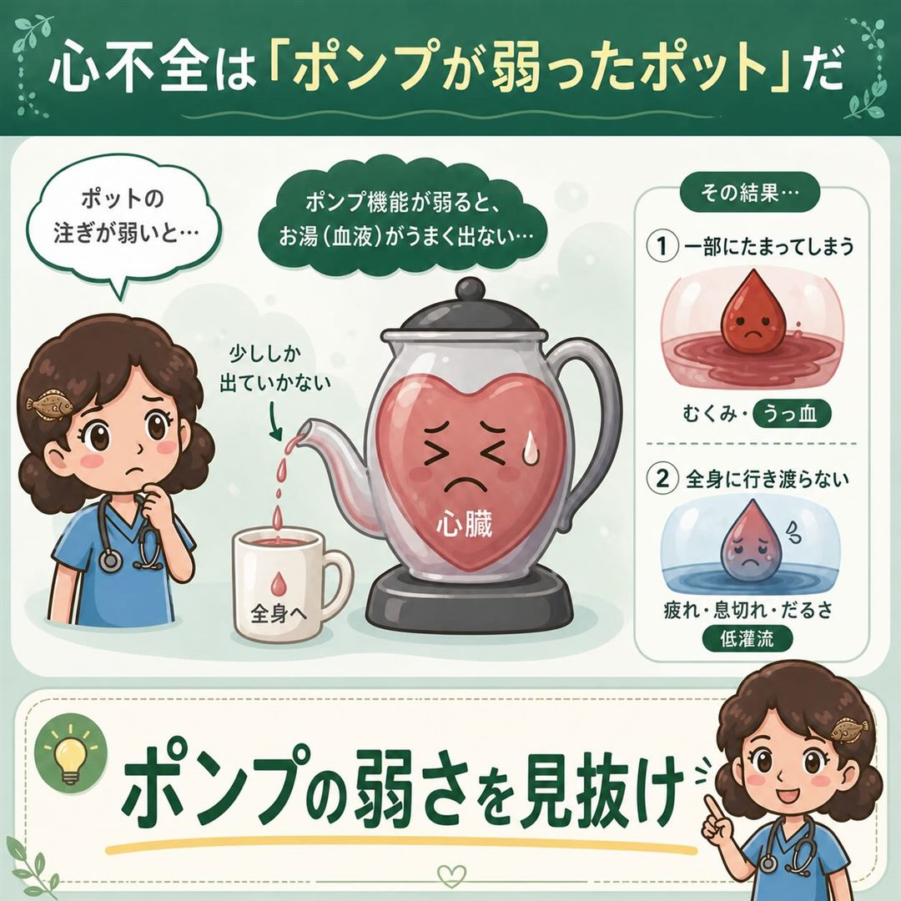
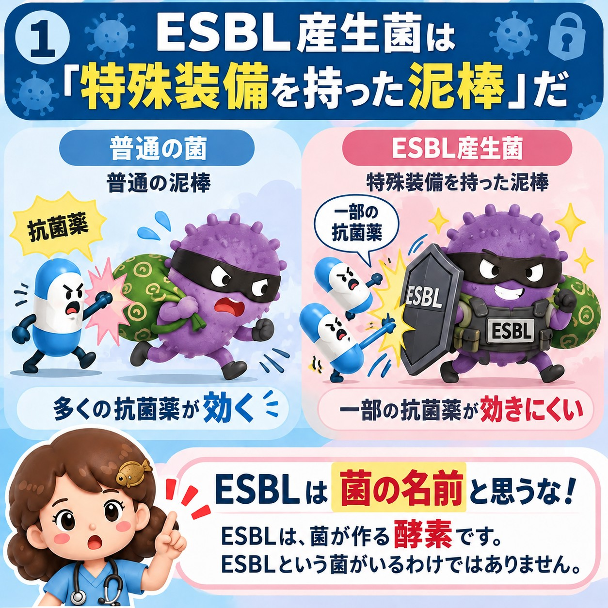
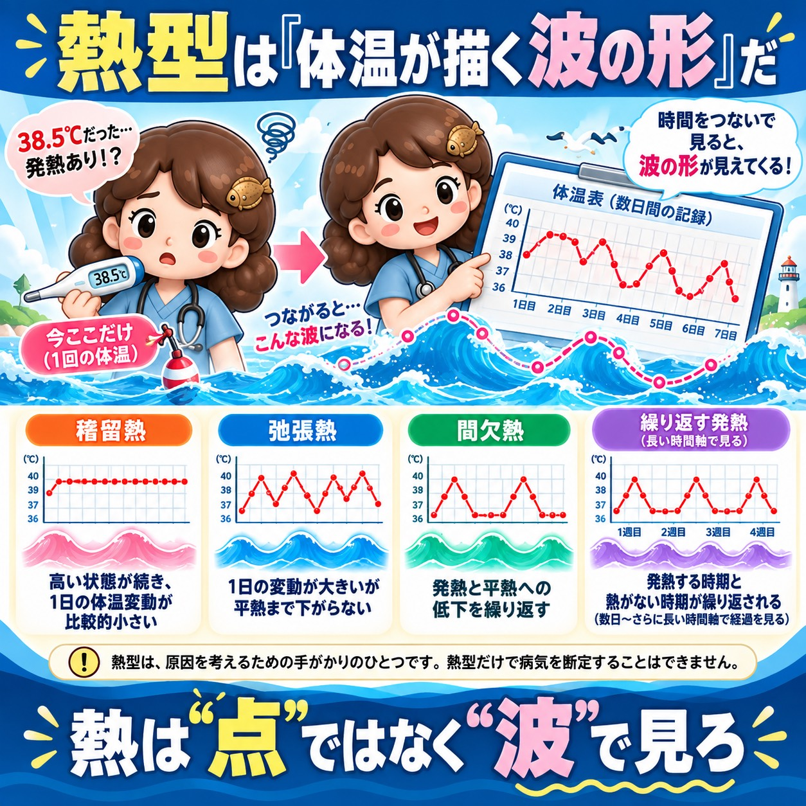

新人のころ、私も丸暗記でつぶれかけました。知識がつながりはじめたのは、勇気を出して「わからない」と口に出し、人に聞けたときでした。
「わからない」は、恥ずかしいことではありません。そこから学びが始まる、いちばん大事な一言です。だから私は、あなたの「わからない」を、「なるほど！」に変える図解をつくっています。
教科書では頭に入らない疾患を、身近なたとえ話と図解でやさしく解説。
看護師歴32年のヒラメが、毎日Threadsで発信しています。
「これがわからない」の一言だけでOK。
こっそりDMで送ってね。



― こんなこと、ありませんか？ ―
それ、あなたのせいじゃありません。
むずかしい言葉のまま覚えようとしているだけ。
身近なモノにたとえて「絵」で見ると、するっと頭に入ります。
― たとえば、こんな図解です ―
タップすると大きく見られます
ESBLや熱型は、シリーズで順番に学べます。続きはThreadsで！
ほかの図解もThreadsで見る― ヒラメの図解が選ばれる理由 ―
ポット、自動ドア、泥棒…。毎日見ているものにたとえるので、イメージで覚えられます。患者さんや後輩に説明するときにも、そのまま使えます。
今も現場に立つ看護師が作っています。「現場で本当に必要なところ」をしぼって伝えます。
「これがわからない」と送ってもらえたら、図解にします。あなたの"わからない"から、次の図解が生まれます。
― こんな人におすすめ ―
覚えても覚えても抜けていく…。イメージで覚えると、忘れにくくなります。
新人さんや学生さんへの説明に。たとえ話は、そのまま指導に使えます。
文字ばかりの本はしんどい…。そんな人こそ、まず絵から入ってみてください。
― リクエストの送り方 ―
むずかしく考えなくて大丈夫。一言でOKです。
下のボタンから、ヒラメのプロフィールへ。
「○○がわからない」だけでOK。
こっそり送れるので安心です。
あなたの"わからない"が、図解になって投稿されるかも！
たとえば、こんなDMで大丈夫
心電図の波形が、何回見てもわかりません…
送ってくれてありがとう！
図解にしてみますね🐟
投稿へのコメントでのリクエストも大歓迎です。
※すべてのリクエストにお応えできない場合もあります。
― 図解をつくっている人 ―
看護師歴32年・現役ナース ／ Threads @hirame_2start
新人のころ、私も丸暗記でつぶれかけました。知識がつながりはじめたのは、勇気を出して「わからない」と口に出し、人に聞けたときでした。
「わからない」は、恥ずかしいことではありません。そこから学びが始まる、いちばん大事な一言です。だから私は、あなたの「わからない」を、「なるほど！」に変える図解をつくっています。
― 50代からでも、あきらめないで。